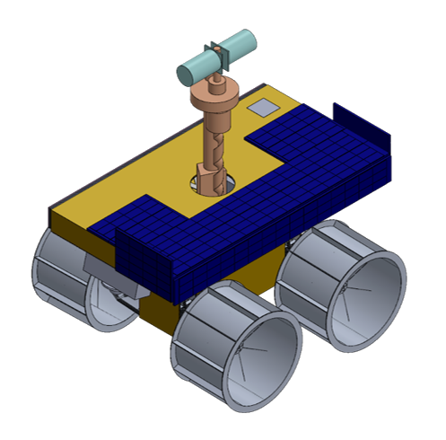
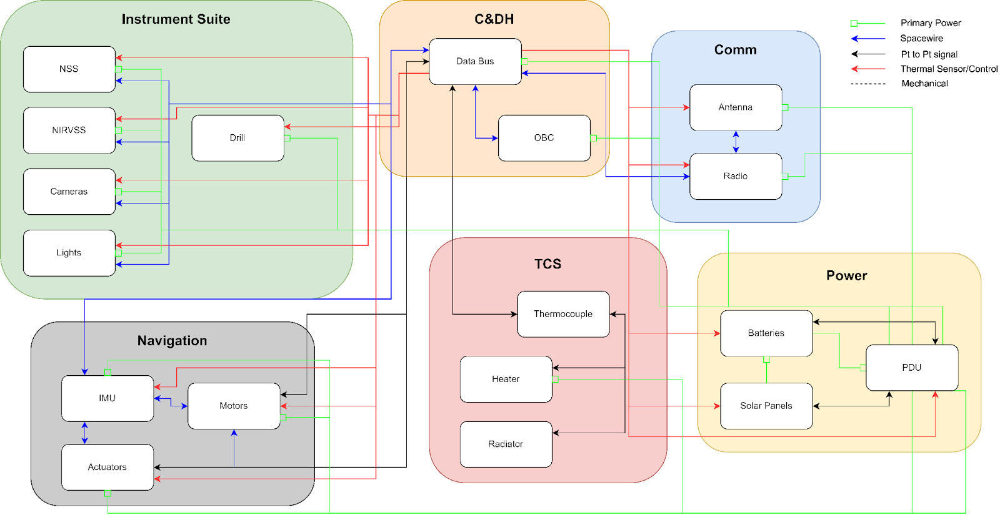
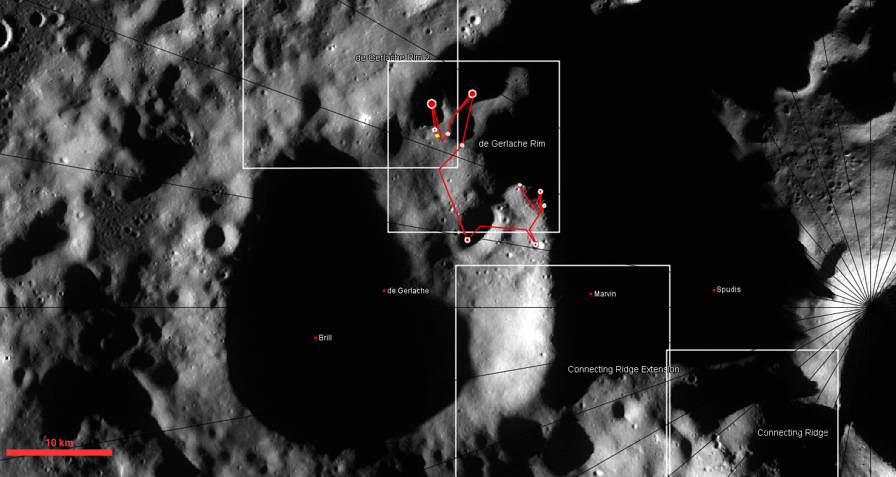
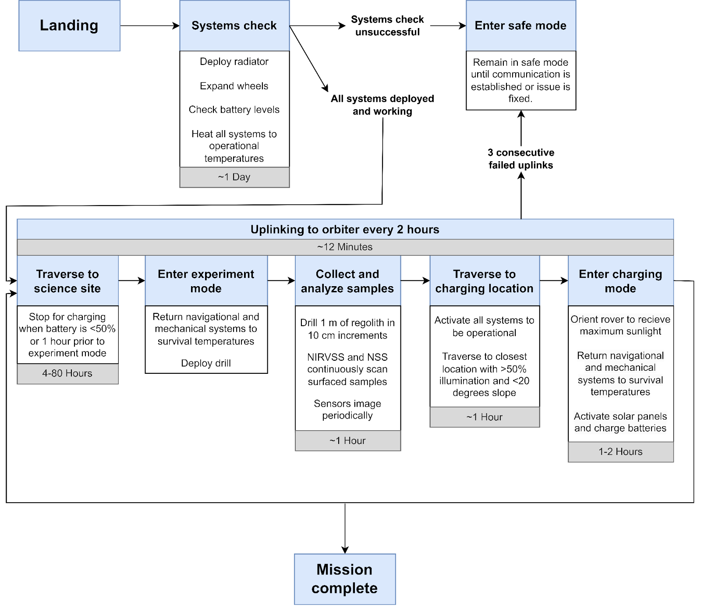

Lunar South Pole Rover Mission Concept (L’SPACE)
Mission architecture and rover design for volatile detection in permanently shadowed regions at the Moon’s south pole.

During NASA’s L’SPACE Mission Concept Academy, my team developed a Discovery-class lunar prospecting mission concept focused on detecting volatiles in permanently shadowed regions near the Moon’s south pole.
We produced a full mission design package across MCR, SRR, MDR, and PDR-level reviews, culminating in a 140-page
Preliminary Design Review report under a $175M cost cap.
As Lead Systems Engineer, I coordinated subsystem development across the team, managed task flow and requirements tracking in Notion, and led major portions of the mechanical architecture, CAD modeling, and power/thermal trade studies. Our work emphasized science-driven design, feasibility within mass and volume constraints, and mission readiness through verification planning.
Early rover architecture development, including suspension geometry, deployable packaging, and mass-informed chassis design for operation in extreme lunar terrain.

We began by developing a Science Traceability Matrix to connect exploration goals to measurable science objectives, payload requirements, and rover-level constraints.
I led rover CAD development using simplified but mass-accurate models for COTS components and subsystem packaging.
A key challenge was closing within the 80 kg rover mass budget and a 1.5 m³ stowed volume constraint. I incorporated structural cutouts and an efficient suspension layout to reduce mass while maintaining mobility in polar terrain.
As systems lead, I also developed integration architecture products including the mission block diagram and N² chart to ensure clear subsystem interfaces and functional flowdown.

The rover concept targets permanently shadowed regions at the lunar south pole, where volatile deposits are most likely to persist.
I developed the mission CONOPS and traverse plan using JMARS, selecting candidate science sites and operational waypoints to balance terrain accessibility, thermal constraints, and science return.

In addition to technical design, I developed programmatic planning products including manufacturer sourcing, component lead-time estimates, and qualification testing flow.
These plans were driven directly by mission requirements and environmental constraints, ensuring the concept remained executable within cost, schedule, and verification expectations.
Our team presented the final mission architecture during a formal
PDR-style design review.